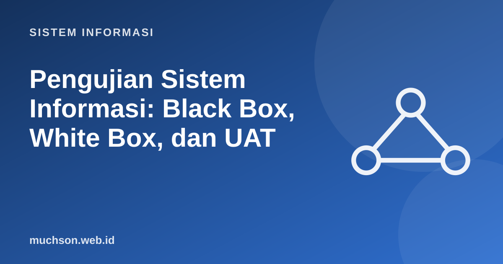

Beranda › Artikel › Sistem Informasi
Sistem InformasiPengujian Sistem Informasi: Black Box, White Box, dan UAT
Pengujian tidak membuktikan program benar; ia menemukan kesalahan sebelum pengguna menemukannya. Karena pengujian lengkap mustahil, seni utamanya adalah memilih sedikit kasus uji yang paling mungkin menemukan banyak kesalahan. Teknik partisi dan nilai batas melakukan itu.
Sebaiknya sudah paham: SDLC, analisis kebutuhan

Setelah membaca dan mencoba materi ini, Anda mampu:
- menyebutkan tingkat pengujian: unit, integrasi, sistem, penerimaan
- membedakan pengujian black box dan white box
- menurunkan test case dengan partisi ekuivalensi dan analisis nilai batas
- menulis test case terstruktur dan menjalankannya otomatis
- menjelaskan UAT, pengujian regresi, dan kriteria selesai
Tingkat pengujian
Black box dan white box
Teknik black box: partisi ekuivalensi dan nilai batas
Misalkan aturan: "Nilai ujian 0–100. Grade A bila ≥ 85, B bila 70–84, C bila 55–69, D bila 0–54. Nilai di luar 0–100 ditolak." Tidak mungkin menguji 101 nilai; cukup satu wakil tiap kelompok (partisi) dan nilai di sekitar batas, tempat bug sering bersembunyi.
| Partisi | Wakil | Nilai batas yang diuji |
|---|---|---|
| Tidak valid (< 0) | −10 | −1 |
| D (0–54) | 30 | 0, 54 |
| C (55–69) | 60 | 55, 69 |
| B (70–84) | 77 | 70, 84 |
| A (85–100) | 92 | 85, 100 |
| Tidak valid (> 100) | 150 | 101 |
def grade(nilai):
if nilai < 0 or nilai > 100:
raise ValueError("nilai harus 0..100")
if nilai >= 85: return "A"
if nilai >= 70: return "B"
if nilai >= 55: return "C"
return "D"
# test case: (masukan, hasil yang diharapkan). None berarti diharapkan ValueError
kasus = [(-10, None), (-1, None), (0, "D"), (30, "D"), (54, "D"), (55, "C"), (60, "C"), (69, "C"),
(70, "B"), (77, "B"), (84, "B"), (85, "A"), (92, "A"), (100, "A"), (101, None), (150, None)]
lulus = gagal = 0
for masukan, harapan in kasus:
try:
hasil = grade(masukan)
except ValueError:
hasil = None
ok = hasil == harapan
lulus += ok; gagal += not ok
print(f"{'LULUS' if ok else 'GAGAL'} grade({masukan:>4}) -> {hasil!s:<4} (diharapkan {harapan})")
print(f"{lulus} lulus, {gagal} gagal dari {len(kasus)} kasus")
# Bug yang SENGAJA disisipkan: >= berubah menjadi > pada batas A
def grade_bug(nilai):
if nilai < 0 or nilai > 100: raise ValueError
if nilai > 85: return "A" # seharusnya >=
if nilai >= 70: return "B"
if nilai >= 55: return "C"
return "D"
print("versi berbug pada nilai batas 85:", grade_bug(85), "(seharusnya A)")
print("versi berbug pada nilai tengah 92:", grade_bug(92), "(lolos; hanya nilai batas yang menangkapnya)")LULUS grade( -10) -> None (diharapkan None)
LULUS grade( -1) -> None (diharapkan None)
LULUS grade( 0) -> D (diharapkan D)
LULUS grade( 30) -> D (diharapkan D)
LULUS grade( 54) -> D (diharapkan D)
LULUS grade( 55) -> C (diharapkan C)
LULUS grade( 60) -> C (diharapkan C)
LULUS grade( 69) -> C (diharapkan C)
LULUS grade( 70) -> B (diharapkan B)
LULUS grade( 77) -> B (diharapkan B)
LULUS grade( 84) -> B (diharapkan B)
LULUS grade( 85) -> A (diharapkan A)
LULUS grade( 92) -> A (diharapkan A)
LULUS grade( 100) -> A (diharapkan A)
LULUS grade( 101) -> None (diharapkan None)
LULUS grade( 150) -> None (diharapkan None)
16 lulus, 0 gagal dari 16 kasus
versi berbug pada nilai batas 85: B (seharusnya A)
versi berbug pada nilai tengah 92: A (lolos; hanya nilai batas yang menangkapnya)
White box: cakupan
def diskon(total, member):
d = 0
if total >= 100_000: # cabang 1
d = 0.05
if member: # cabang 2
d += 0.05
return total * (1 - d)
# Cakupan pernyataan: butuh minimal satu tes yang menjalankan setiap baris.
# Cakupan cabang: setiap kondisi harus diuji bernilai benar DAN salah.
tes = [(50_000, False), (150_000, False), (50_000, True), (150_000, True)]
for t, m in tes:
print(f"total={t:>7}, member={m!s:<5} -> {diskon(t, m):>10,.0f}")total= 50000, member=False -> 50,000
total= 150000, member=False -> 142,500
total= 50000, member=True -> 47,500
total= 150000, member=True -> 135,000
Test case yang baik
ID : TC-KRS-014
Tujuan : Mahasiswa tidak dapat memilih kelas yang sudah penuh
Prakondisi: Kelas SI101-A berkuota 40, terisi 40; mahasiswa login
Langkah : 1. Buka halaman KRS 2. Pilih kelas SI101-A 3. Tekan "Ambil"
Data uji : mahasiswa A01
Hasil diharapkan: Pesan "Kelas penuh"; kelas tidak masuk daftar KRS
Hasil aktual : (diisi saat pengujian)
Status : Lulus / GagalPengujian regresi dan UAT
- Pengujian regresi: menjalankan ulang tes setelah perubahan untuk memastikan fitur lama tidak rusak. Inilah alasan utama otomasi pengujian.
- UAT (User Acceptance Testing): pengguna sungguhan menjalankan skenario bisnis nyata pada lingkungan menyerupai produksi. Hasilnya menentukan apakah sistem diterima.
- Alpha dan beta: uji oleh pengguna internal (alpha) lalu sebagian pengguna eksternal (beta).
- Kriteria penerimaan disepakati sejak awal: persentase tes lulus, jumlah cacat kritis yang boleh tersisa, target kinerja.
Dijkstra: "Pengujian dapat menunjukkan adanya bug, tetapi tidak pernah menunjukkan ketiadaannya." Karena itu keputusan merilis selalu soal risiko yang dapat diterima, bukan kepastian.
1. Turunkan partisi dan nilai batas untuk kolom "umur" yang menerima 17 sampai 65.
2. Mengapa tes unit lebih banyak daripada UAT?
3. Tulis tiga test case untuk fitur "login".
4. Apa beda verifikasi dan validasi?
- Piramida: banyak tes unit, lebih sedikit integrasi, sistem, dan UAT.
- Black box dari spesifikasi; white box dari struktur kode.
- Partisi ekuivalensi dan nilai batas menghasilkan sedikit tes yang efektif.
- Test case terstruktur dan otomasi regresi menjaga mutu antar rilis.
- UAT menentukan penerimaan oleh pengguna.
Tanya jawab
Apa itu TDD?
Apa itu pengujian kinerja dan keamanan?
Siapa yang sebaiknya melakukan UAT?
Referensi
- Glenford Myers, The Art of Software Testing (Wiley, edisi ke-3)
- Ian Sommerville, Software Engineering (Pearson)
- ISTQB: Certified Tester Foundation Level Syllabus
- IEEE 829 / ISO/IEC/IEEE 29119: standar pengujian perangkat lunak